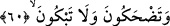
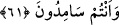

60. Gülüyorsunuz da ağlamıyorsunuz!
“Gülüyorsunuz da…” Bu cümle onların Kur’ân-ı Kerim’in hakîkatine çok uzak
olduklarını beyân eden bir alay ifâdesidir. Râgıb “gülme” ifâdesinin burada onlar için
bir alay maksadı taşıdığını öne sürmektedir. “Ağlamıyorsunuz?” Yâni siz Kur’an’la
ilgili hakikatlere dâir elden kaçırdığınız bilgilere ve geçmiş ümmetlerin başına gelen
felaketlerin sizi de kuşatmasına hüzünlenerek ağlamıyorsunuz? Rivâyete göre bu âyetin
nüzûlünden sonra Rasûlullah (s.a.)’ın güldüğü bir daha görülmemiştir.
Ebû Hüreyre (r.a.)’den nakledildiğine göre o şöyle demiştir: “Bu âyet-i kerîme nâzil
olduğu zaman ehl-i suffa’dan bazı kimselerin ağlamaları daha da arttı. Öyle ki onların
gözyaşları yanaklarından aşağıya aktı. Bunların aşırı ağlamalarını duyan Rasûlullah
(s.a.) kendileriyle birlikte ağladı ve hattâ biz de onun ağlaması sebebiyle ağlamıştık.
Bunun üzerine Rasûlullah (s.a.) bize: “Allah korkusundan ağlayanlar cehenneme
girmeyeceği gibi mâsiyette ısrar edenler de cennete dâhil olamayacaktır. Şâyet sizler
günah işlemezseniz Allah günah işleyen bir toplum getirir. Sonra da onları tevbeleri
sebebiyle bağışlar.”[135] buyurmuştur.
Başka bir rivâyete göre Cibril (a.s.) Rasûlullah’a geldiği bir anda Nebi (s.a.)’in
yanında ağlamakta olan bir adam bulunmaktaydı. Cebrail (a.s) “Kim bu adam” dedi. Hz.
Peygamber (s.a.) “Falandır” diye cevap verdi. Bunun üzerine Cibrîl (a.s.): “Biz
âdemoğlunun amellerinin tamamını tartarız; ancak ağlama bundan müstesnâdır. Zira
Allah cehennem ateşinden olan denizleri gözyaşlarıyla söndürür.”
Bir hadis-i şerifte: “Bu Kur’an hüzünle inmiştir. Onu okuduğunuz vakit ağlayınız.
Şâyet ağlayamazsanız ağlar gibi yapınız”[136] buyrulmuştur. Bunun talep edilmesinin
nedeni; hüznün kişiyi sürûra, ağlamanın da âkıbette gülmeye götürecek olmasındandır.
Sâib şöyle demiştir:
Ey hüzünler evinde oturan, göz karanlığından dolayı inleme!
Yûsuf güzelliğinin parlaklığından temizlenip aydınlanacaktır.
Ve yine şöyle demiştir:
Gülmek, hayat köşkünde bir rahne/çatlak açmaktır
Evin kapısı üstüne kapalı kimse, gamlı olur.
61. Ve siz gaflet içinde oyalanmaktasınız!